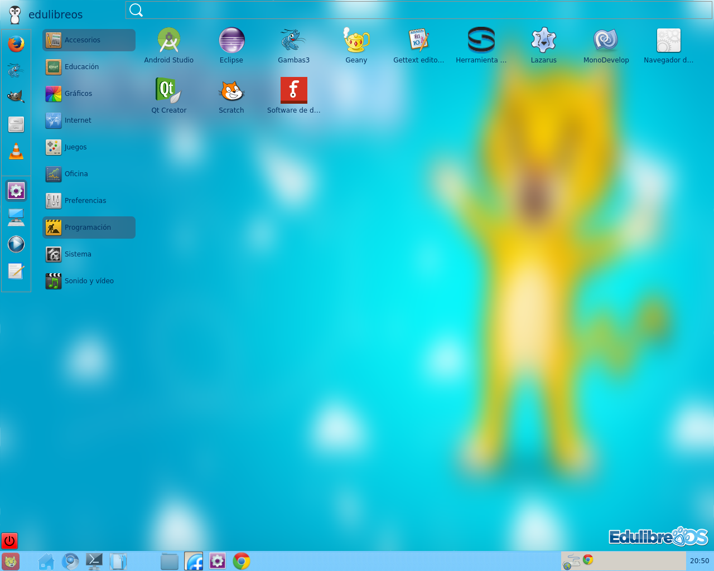
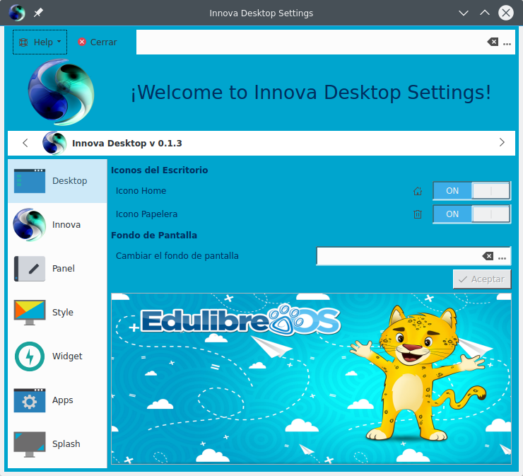
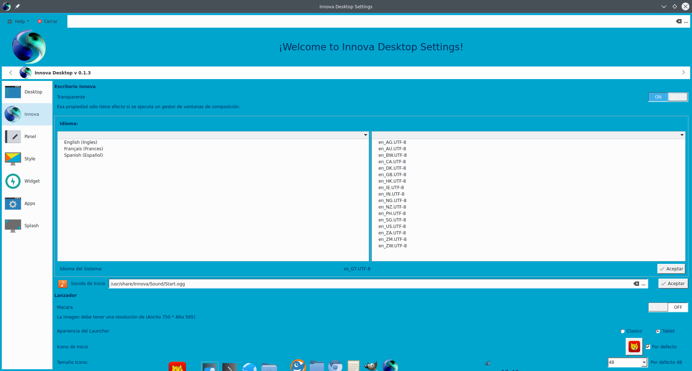

The main interface.

Graphical environment to launch applications advanced, easy to use and fast ,based on technology Qt developed with Gambas3.
Settings Innova
This program allows one to configure easily Innova Desktop with a pleasant and comfortable graphical interface.
- Settings Desktop - Lets you set the wallpaper and icons PC and Trash.
- Settings Innova - Lets you set transparency to the desktop (that property has an effect only if you run a compositing window manager), change the system language, audio mode, change the look of the launcher with a custom design, change the look of launcher (tablet or classico), change the image of start and icons size of Desktop Innova.
- Settings Panel - Developing.
- Settings Style - Developing.
- Settings Widget - Developing.
- Settings Apps - Developing.
- Settings Splash - Developing.

